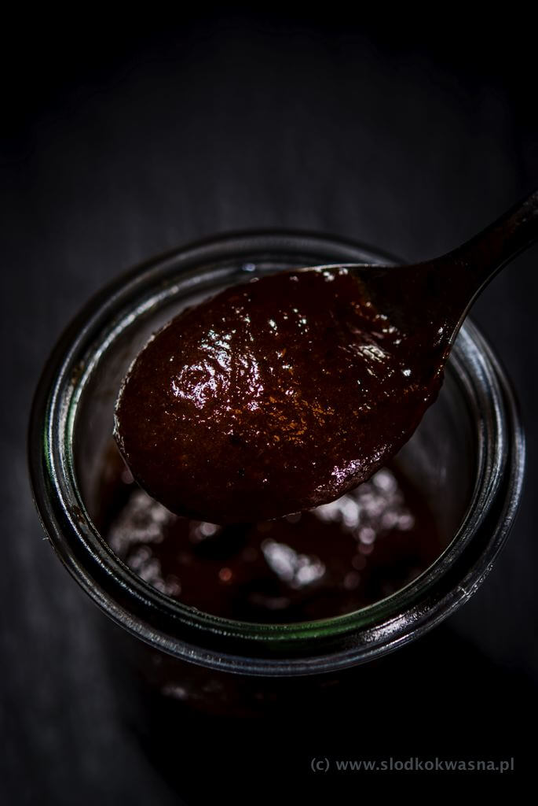

Trinidad scorpion plum sauce

Description
BBQ-like hot sauce made with trinidad scorpion peppers, plums, vinegar, calvados, fish sauce and spices. Perfect for any BBQ dish. Personal favourite for ribs and steaks.
It's very spicy, smoky, sweet, with a strong touch of allspice, ginger, nutmeg and cinnamon.
Ingredients
- 2 trinidad scorpion peppers
- 500 g plums
- 200 g dried or smoked plums
- 1 clove garlic
- 3 tablespoons sugar
- 1 teaspoon salt
- 4 cloves
- 500 ml water
- 2 tablespoons fish sauce
- 50 ml calvados
- 50 ml vinnegar
- 1 teaspoon mulled wine spice mix
Steps
- Add all ingredients to a pot.
- Bring to a boil. Reduce heat and simmer for about 3 hours, until plums are overcooked.
- Cool off and blend smooth. Transfer to serving bottles.
- If the sauce is too thick, you can use boiling water to thin it out